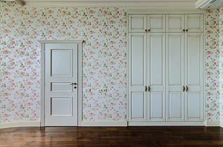
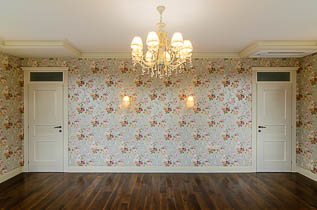
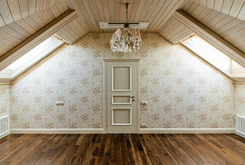

Поклейка обоев
  
Специалисты Артели выполняют весь работы по поклейке обоев всех видов. Работа выполняется профильными специалистами-отделочниками, что гарантирует высокое качество исполнения и эстетическую безупречность.
Все вопросы по особенностям различных типов обоев и стоимости работ вы можете задать по телефону +7 495 99-88-347.
Обсудим детали?
Виды обоев и особенности их поклейки
Современные обои представлены на рынке в достаточно широком ассортименте, позволяющем потребителям выбирать любой материал, наиболее подходящий для тех или иных условий.
Виниловые обои
Виниловые обои включают в свой состав два слоя: прочной белой бумаги или ткани снизу и плёнки ПВХ сверху (последний повышает их прочность), причём последний слой покрывается рисунком или тиснением. Они нетоксичны, неуязвимы для грибков, устойчивы к износу и могут эксплуатироваться долгие годы. Они не только могут отлично обогнуть неровности и углы, но и растянуться в трудных местах. А с помощью их рельефной поверхности отлично скрываются дефекты стен. Так же виниловым обоям не страшны солнечные лучи (они не выгорят), вода и грязь. По своей сути, это моющиеся обои – они прекрасно моются и даже трутся щёткой;
Флизелиновые обои
Такие обои имеют вместо бумажной основы флизелиновую. Флизелин является комбинированным материалом, включающим в свой состав комбинированные волокна и целлюлозу. Он намного прочней бумаги и, в отличие от неё наклеивается более легко, кроме того, он не будет растягиваться или давать усадку в случае намокания и последующего высыхания. Здесь главное наносить клей непосредственно на стену, а затем на клей накладывать сухие обои, что обеспечивает исключительную точность подгонки обойных полос;
Текстильные обои
Текстильные обои состоят из бумажной подложки, на которой закреплено натуральное или искусственное текстильное полотно. Как правило, изготовляются из льна, шёлка, вискозы. А поскольку полотно изготавливается из самых разнообразных нитей, появляется возможность создать любую цветовую гамму, удовлетворяющую вкусы любых наиболее взыскательных покупателей и дизайнеров. Тут стоит вспомнить и ещё об одном их подвиде – велюровых обоях, являющихся по сути своей бумажным полотном, на которое в ходе производства сперва наносят рисунок, а после этого велюровые ворсинки, приводящие к образованию мягкой бархатной поверхности. Необходимость подгонки по рисунку для таких обоев полностью отпадает. Своеобразная текстура текстильных обоев позволяет им имитировать сплошную тканевую стену – так незаметно они соединяются между собой. Правда, такая красота оказывается уязвимой перед истираниями и разнообразными механическими повреждениями. А если учесть, что источниками таких повреждений являются домашние животные и маленькие дети, при наличии их в доме без тканевых обоев лучше обойтись. Кроме того, для их наклейки понадобятся идеально ровные стены, иначе после поклейки и высыхания будут бросаться в глаза все дефекты их поверхностей;
Стеклообои (стекловолокнистые обои)
На изготовление стеклообоев идёт ткань или специальная пряжа, материалом которой служат тонкие нити, вытягиваемые из стекла под воздействием высоких температур. Они подходят для любых помещений и служат до тридцати лет. После поклейки обязательно красятся. Клеятся так же, как флизелиновые;
Жидкие обои
Жидкие обои изготовлены из натуральных хлопковых или целлюлозных волокон, красителей высокого качества и клеевого состава. В некоторых же случаях их состав могут дополнять достаточно специфические ингредиенты: слюду, древесную кору, сухие водоросли. Эти обои могут продаваться как в качестве сухих смесей, так и уже готовыми. А их микропористая структура наделяет их превосходной звуко- и теплоизоляцией, антистатическими свойствами и способностью «дышать». Выгорания их почти не происходит. Стена, оклеенная жидкими обоями, приобретает мягкое и приятное на ощупь декоративное покрытие 1 – 10 мм (но обычно 1 -3мм) в толщину, без швов, с шероховатой фактурой. Такие обои прекрасно заполнят щели там, где к стенам прилегают наличники, плинтуса и рамы, кроме того, они незаменимы для сокрытия трещин и прочих дефектов. Их даже можно не ремонтировать: достаточно очистки повреждённого участка стены и нанесения туда нового состава шпателем или распылителем. Сохнут они где-то 12 – 72 часа.